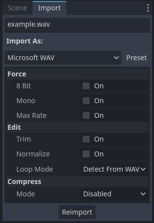

Importing audio samples
Supported audio formats
Godot provides 3 options to import your audio data: WAV, Ogg Vorbis and MP3.
Each format has different advantages:
WAV files use raw data or light compression (IMA ADPCM or Quite OK Audio). Currently they can only be imported in raw format, but Godot allows compression after import. They are lightweight to play back on the CPU (hundreds of simultaneous voices in this format are fine). The downside is that they take up a lot of disk space.
Ogg Vorbis files use a stronger compression that results in much smaller file size, but require significantly more processing power to play back.
MP3 files use better compression than WAV with IMA ADPCM or Quite OK Audio, but worse than Ogg Vorbis. This means that an MP3 file with roughly equal quality to Ogg Vorbis will be significantly larger. On the bright side, MP3 requires less CPU usage to play back compared to Ogg Vorbis.
Note
If you've compiled the Godot editor from source with specific modules disabled, some formats may not be available.
Here is a comparative chart representing the file size of 1 second of audio with each format:
Format |
1 second of audio |
|---|---|
WAV 24-bit, 96 kHz, stereo |
576 KB |
WAV 16-bit, 44 kHz, mono |
88 KB |
WAV IMA ADPCM, 44 kHz, mono |
22 KB |
Quite OK Audio, 44 kHz, mono |
17 KB |
MP3 192 Kb/s, stereo |
24 KB |
Ogg Vorbis 128 Kb/s, stereo |
16 KB |
Ogg Vorbis 96 Kb/s, stereo |
12 KB |
Note that the MP3 and Ogg Vorbis figures can vary depending on the encoding type. The above figures use CBR encoding for simplicity, but most Ogg Vorbis and MP3 files you can find online are encoded with VBR encoding which is more efficient. VBR encoding makes the effective audio file size depend on how "complex" the source audio is.
Tip
Consider using WAV for short and repetitive sound effects, and Ogg Vorbis for music, speech, and long sound effects. MP3 is useful for mobile and web projects where CPU resources are limited, especially when playing multiple compressed sounds at the same time (such as long ambient sounds).
Importing audio samples
Several options are available in the Import dock after selecting a WAV file in the FileSystem dock:

Import options in the Import dock after selecting a WAV file in the FileSystem dock
The set of options available after selecting an Ogg Vorbis or MP3 file is different:

Import options in the Import dock after selecting an MP3 file in the FileSystem dock. Options are identical for Ogg Vorbis files.
After importing a sound, you can play it back using the AudioStreamPlayer, AudioStreamPlayer2D or AudioStreamPlayer3D nodes. See Audio streams for more information.
Import options (WAV)
Force > 8 Bit
If enabled, forces the imported audio to use 8-bit quantization if the source file is 16-bit or higher.
Enabling this is generally not recommended, as 8-bit quantization decreases audio quality significantly. If you need smaller file sizes, consider using Ogg Vorbis or MP3 audio instead.
Force > Mono
If enabled, forces the imported audio to be mono if the source file is stereo. This decreases the file size by 50% by merging the two channels into one.
Force > Max Rate
If set to a value greater than 0, forces the audio's sample rate to be
reduced to a value lower than or equal to the value specified here.
This can decrease file size noticeably on certain sounds, without impacting quality depending on the actual sound's contents. See Best practices for more information.
Edit > Trim
The source audio file may contain long silences at the beginning and/or the end. These silences are inserted by DAWs when saving to a waveform, which increases their size unnecessarily and add latency to the moment they are played back.
Enabling Trim will automatically trim the beginning and end of the audio if it's lower than -50 dB after normalization (see Edit > Normalize below). A fade-in/fade-out period of 500 samples is also used during trimming to avoid audible pops.
Edit > Normalize
If enabled, audio volume will be normalized so that its peak volume is equal to 0 dB. When enabled, normalization will make audio sound louder depending on its original peak volume.
Edit > Loop Mode
Unlike Ogg Vorbis and MP3, WAV files can contain metadata to indicate whether they're looping (in addition to loop points). By default, Godot will follow this metadata, but you can choose to apply a specific loop mode:
Detect from WAV: Uses loop information from the WAV metadata.
Disabled: Don't loop audio, even if metadata indicates the file should be played back looping.
Forward: Standard audio looping. Plays the audio forward from the beginning to the loop end, then returns to the loop beginning and repeats.
Ping-Pong: Plays the audio forward until the loop end, then backwards to the loop beginning, repeating this cycle.
Backward: Plays the audio backwards from the loop end to the loop beginning, then repeats.
When choosing one of the Forward, Ping-Pong or Backward loop modes,
loop points can also be defined to make only a specific part of the sound loop.
Loop Begin is set in samples after the beginning of the audio file. Loop
End is also set in samples after the beginning of the audio file, but will use
the end of the audio file if set to -1.
Warning
In AudioStreamPlayer, the finished signal won't be emitted for looping
audio when it reaches the end of the audio file, as the audio will keep
playing indefinitely.
Compress > Mode
Three compression modes can be chosen from for WAV files: PCM (Uncompressed), IMA ADPCM, or Quite OK Audio (default). IMA ADPCM reduces file size and memory usage a little, at the cost of decreasing quality in an audible manner. Quite OK Audio reduces file size a bit more than IMA ADPCM and the quality decrease is much less noticeable, at the cost of slightly higher CPU usage (still much lower than MP3).
Ogg Vorbis and MP3 don't decrease quality as much and can provide greater file size reductions, at the cost of higher CPU usage during playback. This higher CPU usage is usually not a problem (especially with MP3), unless playing dozens of compressed sounds at the same time on mobile/web platforms.
Import options (Ogg Vorbis and MP3)
Loop
If enabled, the audio will begin playing at the beginning after playback ends by reaching the end of the audio.
Warning
In AudioStreamPlayer, the finished signal won't be emitted for looping
audio when it reaches the end of the audio file, as the audio will keep
playing indefinitely.
Loop Offset
The loop offset determines where audio will start to loop after playback reaches
the end of the audio. This can be used to only loop a part of the audio file,
which is useful for some ambient sounds or music. The value is determined in
seconds relative to the beginning of the audio, so 0 will loop the entire
audio file.
Only has an effect if Loop is enabled.
A more convenient editor for Loop Offset is provided in the Advanced import settings dialog, as it lets you preview your changes without having to reimport the audio.
BPM
The Beats Per Minute of the audio track. This should match the BPM measure that was used to compose the track. This is only relevant for music that wishes to make use of interactive music functionality, not sound effects.
A more convenient editor for BPM is provided in the Advanced import settings dialog, as it lets you preview your changes without having to reimport the audio.
Beat Count
The beat count of the audio track. This is only relevant for music that wishes to make use of interactive music functionality, not sound effects.
A more convenient editor for Beat Count is provided in the Advanced import settings dialog, as it lets you preview your changes without having to reimport the audio.
Bar Beats
The number of bars within a single beat in the audio track. This is only relevant for music that wishes to make use of interactive music functionality , not sound effects.
A more convenient editor for Bar Beats is provided in the Advanced import settings dialog, as it lets you preview your changes without having to reimport the audio.
Advanced import settings (Ogg Vorbis and MP3)
If you double-click an Ogg Vorbis or MP3 file in the FileSystem dock (or choose Advanced… in the Import dock), you will see a dialog appear:

Advanced dialog when double-clicking an Ogg Vorbis or MP3 file in the FileSystem dock
This dialog allows you to edit the audio's loop point with a real-time preview, in addition to the BPM, beat count, and bar beats. These 3 settings are used for interactive music, to smoothly transition between different music tracks.
Note
Unlike WAV files, Ogg Vorbis and MP3 only support a "loop begin" loop point, not a "loop end" point. Looping can also be only be standard forward looping, not ping-pong or backward.
Best practices
Use appropriate quality settings
While keeping pristine-quality audio sources is important if you're performing editing, using the same quality in the exported project is not necessary. For WAV files, Godot offers several import options to reduce the final file size without modifying the source file on disk.
To reduce memory usage and file size, choose an appropriate quantization, sample rate and number of channels for your audio:
There's no audible benefit to using 24-bit audio, especially in a game where several sounds are often playing at the same time (which makes it harder to appreciate individual sounds).
Unless you are slowing down the audio at runtime, there's no audible benefit to using a sample rate greater than 48 kHz. If you wish to keep a source with a higher sample rate for editing, use the Force > Max Rate import option to limit the sample rate of the imported sound (only available for WAV files).
Many sound effects can generally be converted to mono as opposed to stereo. If you wish to keep a source with stereo for editing, use the Force > Mono import option to convert the imported sound to mono (only available for WAV files).
Voices can generally be converted to mono, but can also have their sample rate reduced to 22 kHz without a noticeable loss in quality (unless the voice is very high-pitched). This is because most human voices never go past 11 kHz.
Use real-time audio effects to reduce file size
Godot has an extensive bus system with built-in effects. This saves SFX artists the need to add reverb to the sound effects, reducing their size greatly and ensuring correct trimming.

As you can see above, sound effects become much larger in file size with reverb added.
See also
Audio samples can be loaded and saved at runtime using runtime file loading and saving, including from an exported project.